Assignment 3
Contents
1.Monte-Carlo simulator with the electrical field
From top to bottom: Conductionmap, Voltage map, Electrical field, Force map, Acceleration map, particle trajectories, current density and temperature map need current density
close all
A3_p1
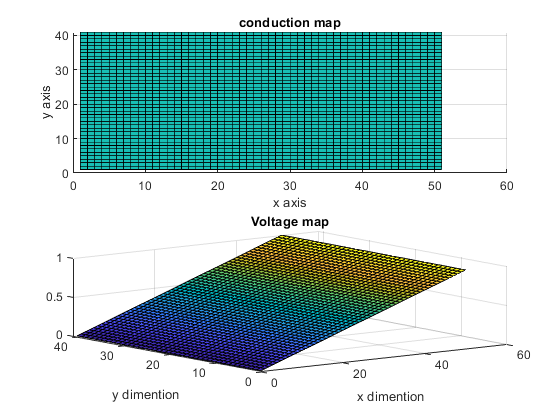 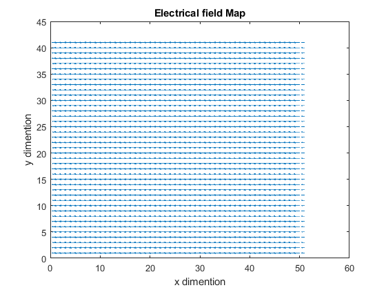 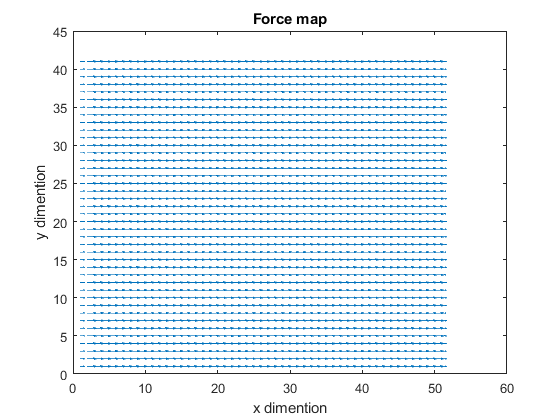 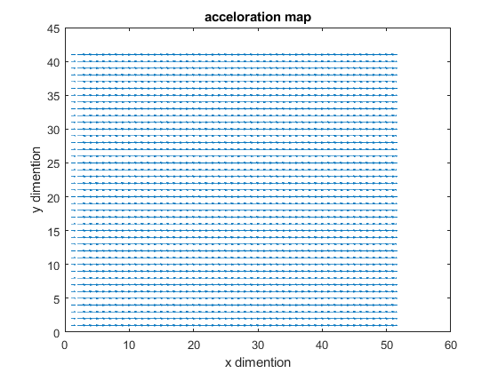 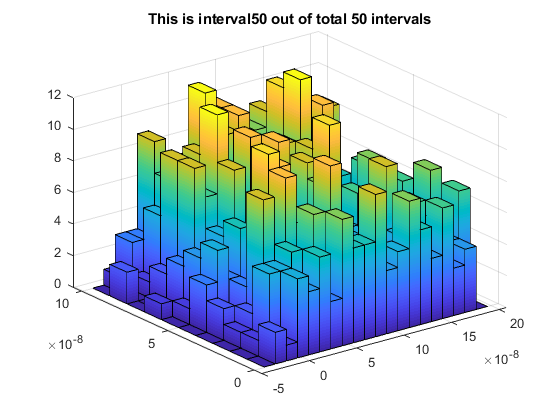 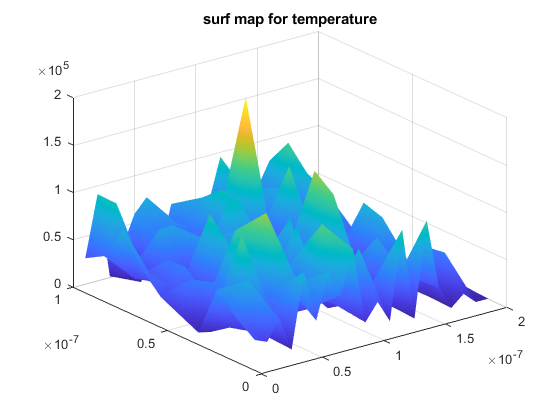 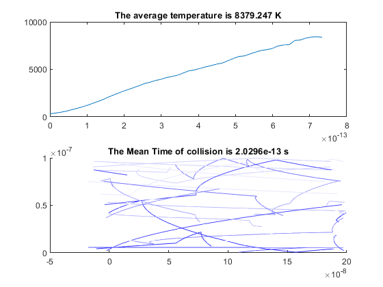 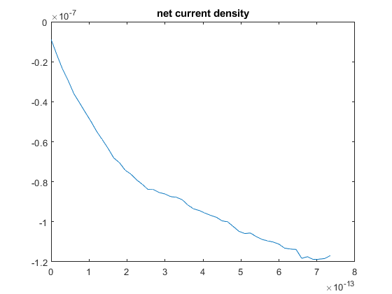 2.Bottle-neck field added
From top to bottom: Voltage map, Electrical field, particle trajectories
With 1000 intervals and 1000 particles, there are error cases pass the boxed region... The reflection is not defined with crossing x and y boundary at the same time, via corners
close all
A3_p2
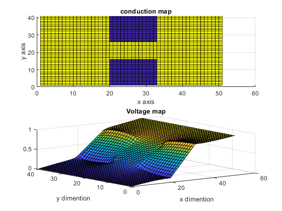 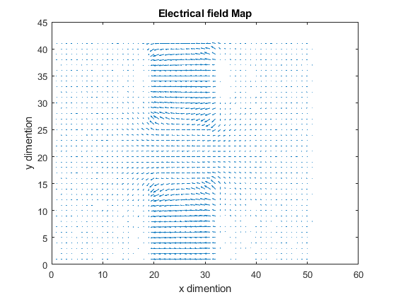 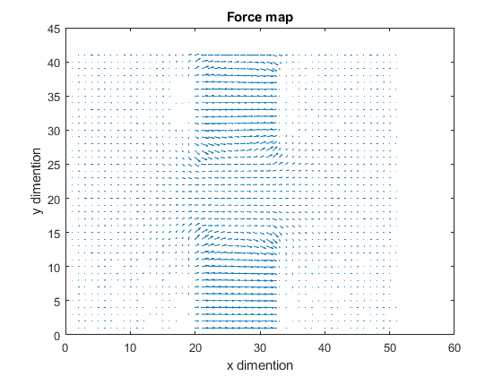 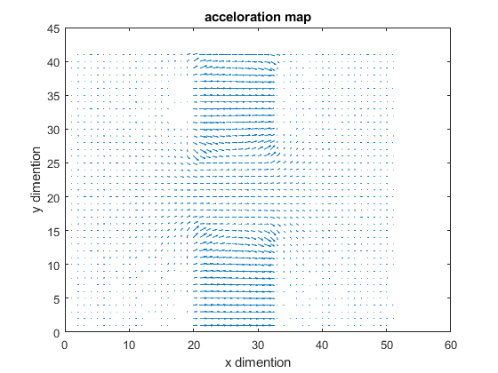 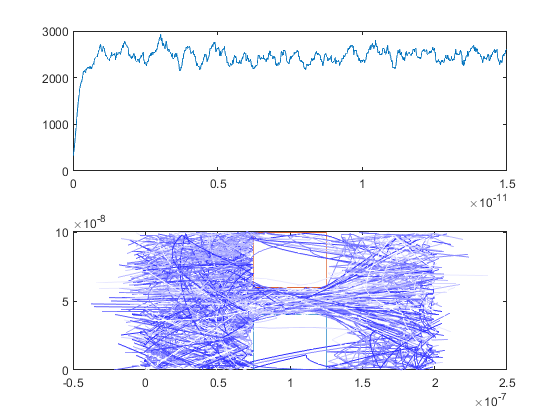 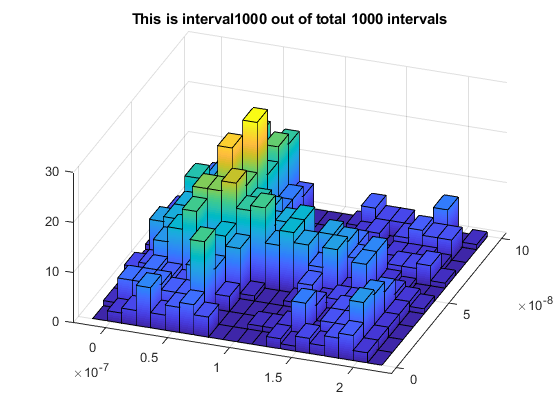 3. Current versus bottle-neck size
From top to bottom: current vs. bottle-neck, density plot in different bottle-neck
Current formula in particle simulation is given in lecture:
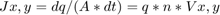
Where J is the current density in x or y direction, q is the particle charge, n is the number of electron and velocity in x y direction
The current density decrease with larger bottle-neck width, as expected. The bottle-neck region represents a highly resistive area, an increase in the area means an increase in the effective resistance, hence reduction in current density.
Also, the scattering effect of particles is seen on the left side of the boxed region. It is due to reflection on the box edge and a force to the right acting on the particles.
To make the simulation more accurate, the step time can be reduced. The large step time causes the particle to penetrate boxed region. This is because the next position and previous position are both outsides of the boxed region.
Also the error of 'corner leakage' should be fixed, by checking the order of logic.
close all
A3_p3
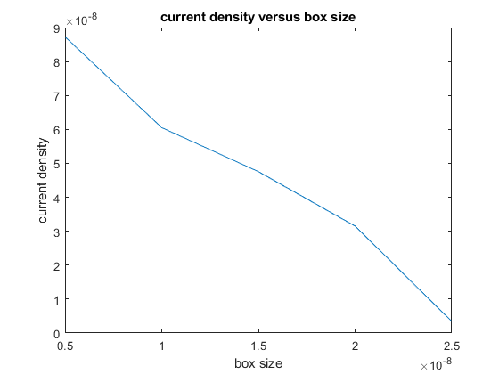 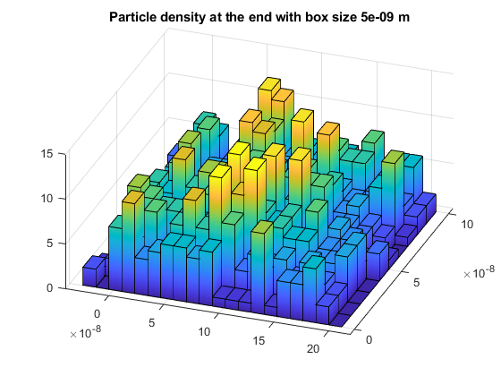 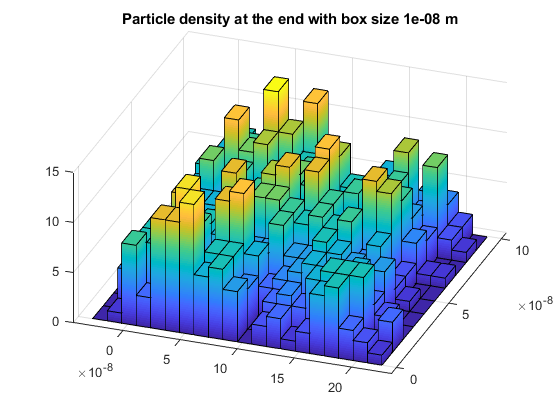 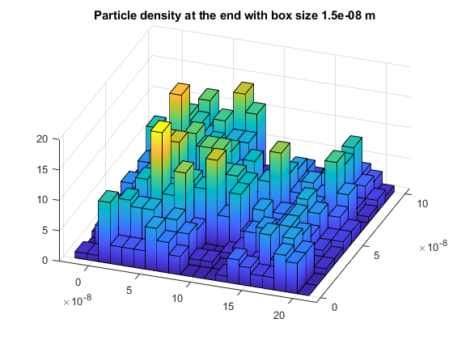 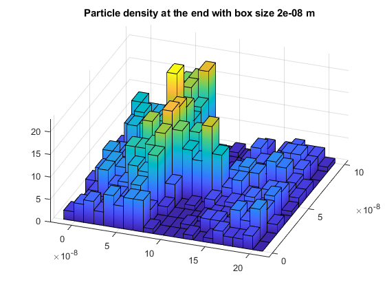 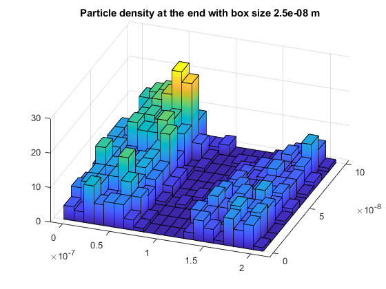